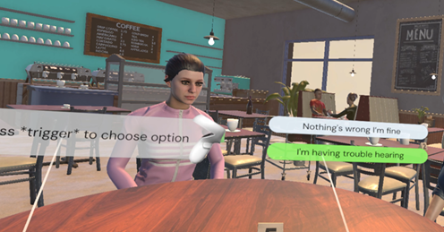
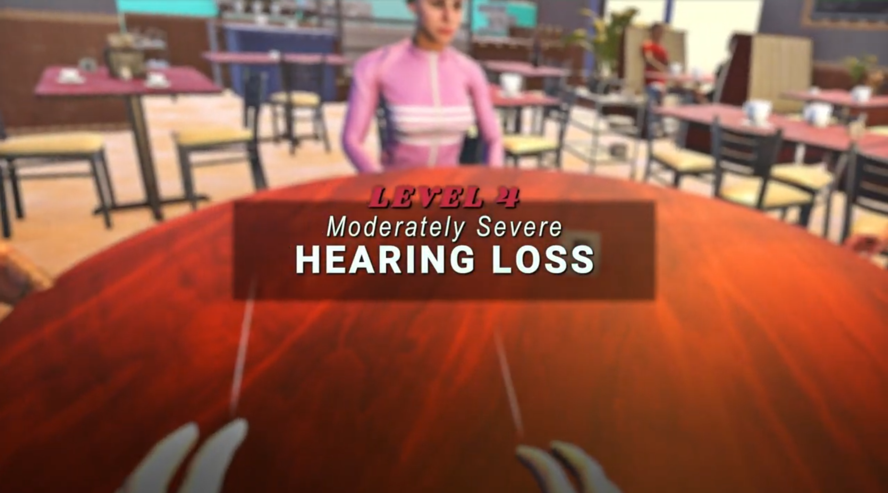
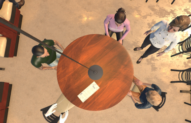
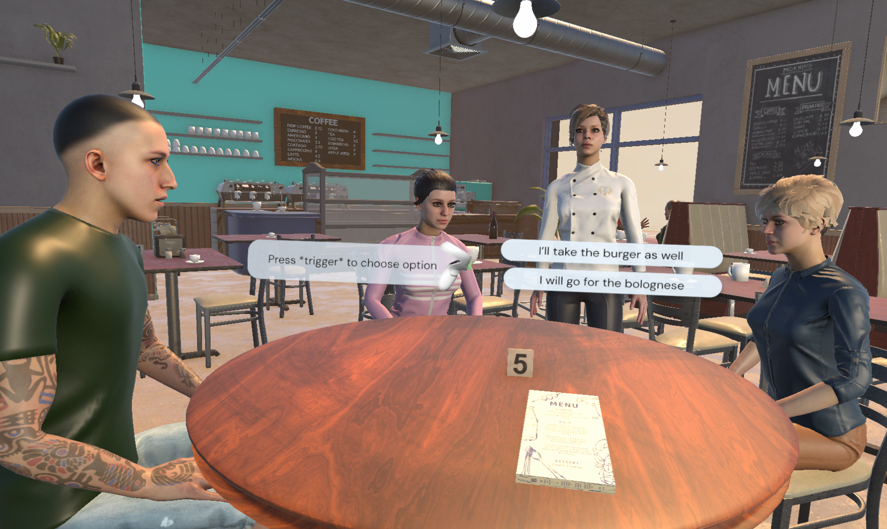
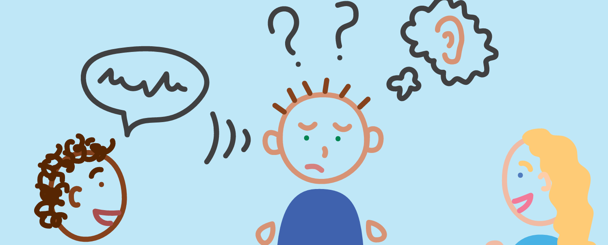

Communication
Participants became more aware of practical ways to communicate supportively, such as rephrasing, speaking clearly and maintaining eye contact.
An immersive VR experience exploring how simulated hearing loss can communicate the challenges of everyday conversation and support a better understanding of hearing loss.
This project explores how VR can be used to communicate the everyday challenges of hearing loss.
Set in a café, the experience places the user in conversations with three other people while gradually changing the clarity of speech and surrounding sound to simulate different levels of hearing loss.
Rather than simply explaining hearing loss, the experience lets users encounter the frustration, confusion and social difficulty that can come with struggling to follow a conversation.

The project was evaluated through user testing to explore whether experiencing hearing loss in VR could influence how people understand and respond to communication difficulties.
Participants experienced different levels of simulated hearing loss and were asked about their reactions, understanding and ways they would communicate with someone experiencing hearing loss.
Participants became more aware of practical ways to communicate supportively, such as rephrasing, speaking clearly and maintaining eye contact.
The experience made the social difficulty of following conversations with hearing loss more tangible.
Participants described feelings of frustration, confusion and exclusion as the simulated hearing loss became more severe.
The study did not show a significant increase in measured empathy, but it did show increased knowledge of supportive communication.
My main role was developing the core systems of the experience in Unity and programming the VR interactions needed to support the simulation.
I worked with Unity and OpenXR to build the interactive environment, implement object interactions and connect the different systems that made the VR experience function.



